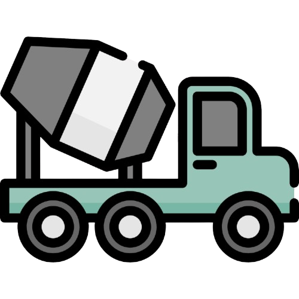
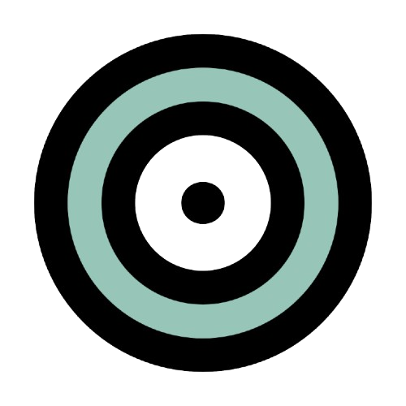
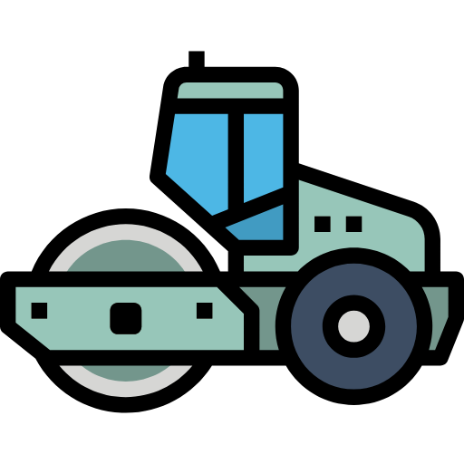
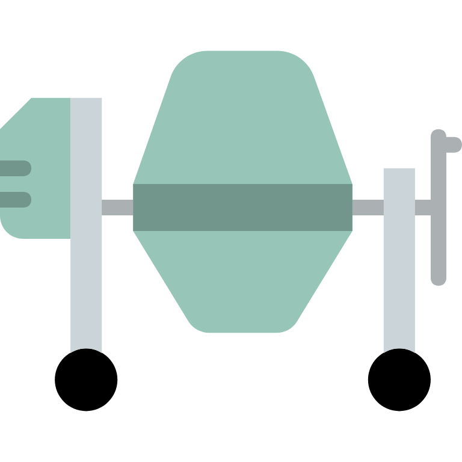
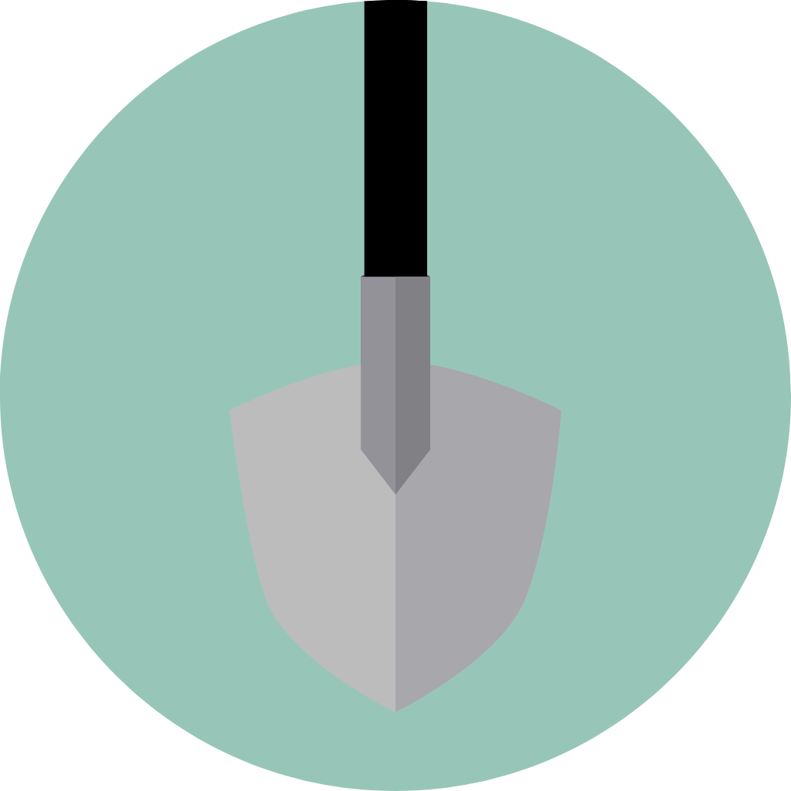
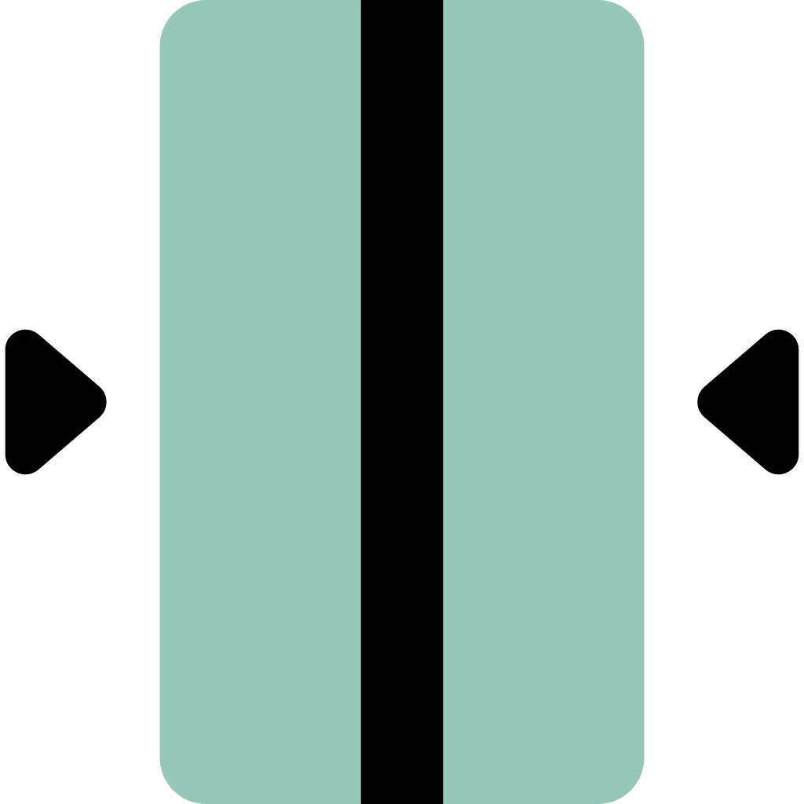
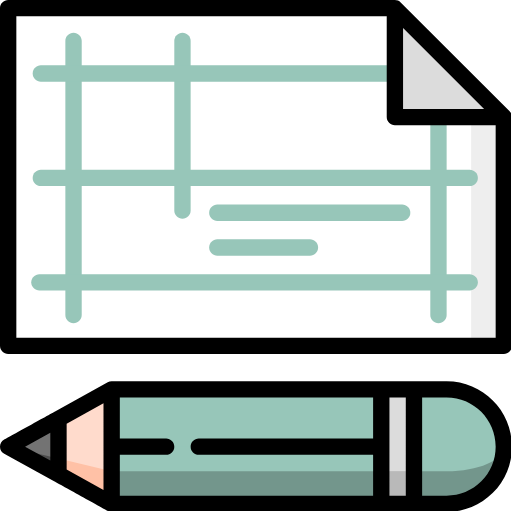
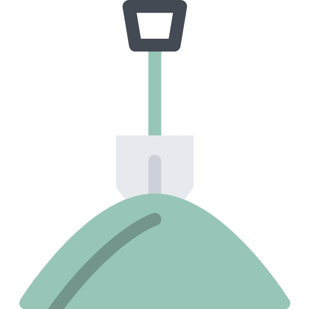

Formulaires de chantier
Accueil
Sélectionnez un formulaire :
Organisme :
Secteur :
ENG - MTQ • GEN
Journal de chantier (Nouveau)
Suivi journalier des travaux et interventions (photos incluses + heures travaillées)
EQ-09-IM-134e rév. 00 (26-08)
ENG - MTQ • GEN
Journal de chantier
Suivi journalier des travaux et interventions
EQ-09-IM-143 rév. 00 (99-02)
ENG - MTQ • GEN
Journal photo
Documentation photographique
EQ-09-IM-579 rév. 00 (99-06)
ENG - MTQ • ICI - MAT

Rapport de béton
Inspection et essais sur béton frais
EQ-09-IM-505 rév. 09 (15-07)
EQ-09-IM-504 rév. 04 (11-05)
EQ-09-IM-503 rév. 03 (15-07)
EQ-09-IM-504 rév. 04 (11-05)
EQ-09-IM-503 rév. 03 (15-07)
ENG - MTQ • ICI - MAT

Planche de référence
Établissement de la densité cible
EQ-09-IM-158 rév. 05 (26-05)
ENG - MTQ • ICI - MAT

Rapport de compactage
Essais in situ au nucléodensimètre
EQ-09-IM-509 rév. 08 (26-06)
ENG • ICI - MAT

Rapport de coulis
Essais sur coulis prémélangé
EQ-09-IM-197 rév. 01 (09-07)
ENG • ICI - MAT

Échantillonage sols et granulats
Collecte et analyse des échantillons
EQ-09-IM-501 rév. 11 (26-06)
ENG • ICI - MAT

Enrobé bitumineux
Suivi et contrôle de l'enrobé bitumineux
Essai de concordance
EQ-09-IM-248a rév. 02 (13-04)
ENG • GEN

Croquis
Croquis technique de terrain
EQ-09-IM-004 rév. 00 (99-02)
ENG • ICI - GEO

Fond d'excavation
Vérification du fond d'excavation
EQ-09-GE-02
MTQ
App_Title
App_Description
CODE (XX-XX)
CODE (XX-XX)
CODE (XX-XX)
CODE (XX-XX)
CODE (XX-XX)
HDQ
App_Title
App_Description
CODE (XX-XX)
CODE (XX-XX)
CODE (XX-XX)
CODE (XX-XX)
CODE (XX-XX)
Aucun formulaire ne correspond à ces filtres.